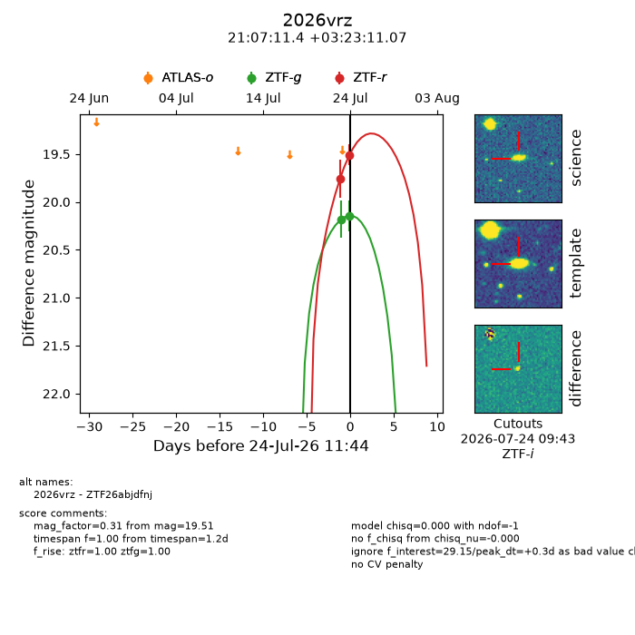
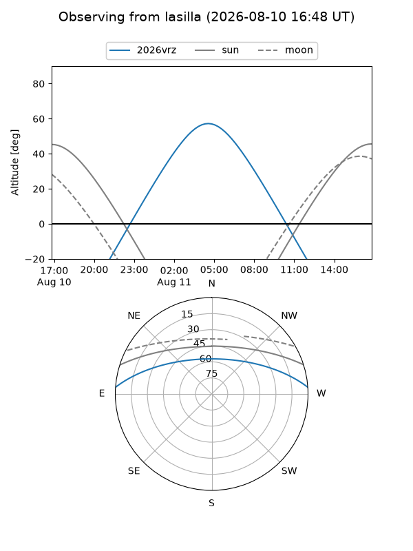
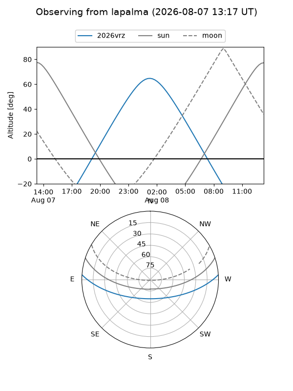
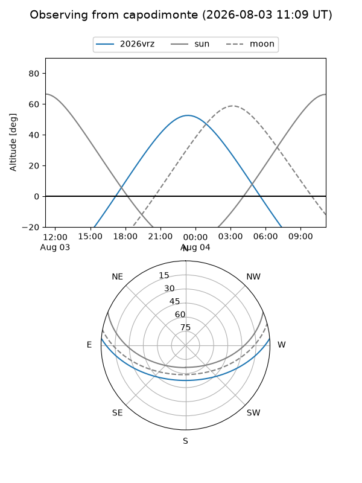
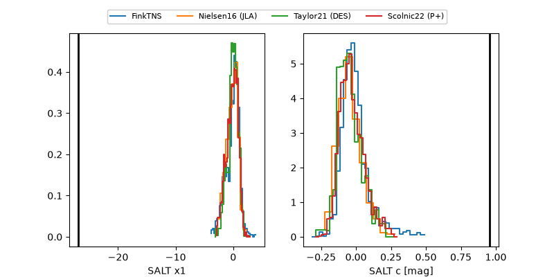

2026vrz
Target 2026vrz at 2026-07-24 11:46
Aliases and brokers:
FINK-ZTF: ztf.fink-portal.org/ZTF26abjdfnj
Lasair-ZTF: lasair-ztf.lsst.ac.uk/objects/ZTF26abjdfnj
ALeRCE-ZTF: alerce.online/object/ZTF26abjdfnj
YSE-PZ: ziggy.ucolick.org/yse/transient_detail/2026vrz
TNS name: wis-tns.org/object/2026vrz
Direct TNS query: direct search
alt names
ZTF26abjdfnj (ztf,fink_ztf)
2026vrz (tns,yse)
Coordinates:
equatorial (ra, dec) = 316.7975,+3.38641
equatorial (HMS+DMS) = 21:07:11.39,+03:23:11.07
galactic (l, b) = (53.2527,-27.97418)
Flags:
TNS type: nan
peak dt: +0.3
Photometry:
last ztfg=20.14, ztfr=19.51
2 ztfg, 2 ztfr detections
Lightcurve

Visibility



Additional plots
